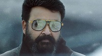
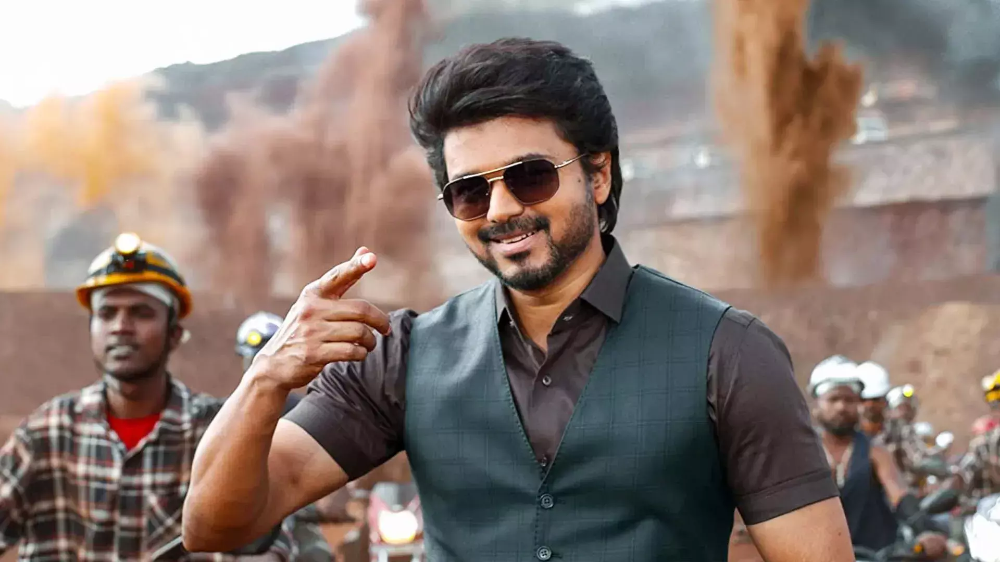

Gallery
Mammotty

About
Muhammad Kutty Panaparambil Ismail, known mononymously by the hypocorism Mammootty, is an Indian actor and film producer who works predominantly in Malayalam films. He has also appeared in Tamil, Telugu, Kannada, Hindi, and English-language productions.
Mohanlal
About
Mohanlal Viswanathan, known mononymously as Mohanlal, is an Indian actor, film producer, playback singer, film distributor, and director who predominantly works in Malayalam cinema besides also having sporadically appeared in Tamil, Hindi, Telugu and Kannada-language films.
Vijay
About
Joseph Vijay Chandrasekhar, known professionally as Vijay, is an Indian actor and singer who works predominantly in Tamil cinema. He is among the highest paid actors in India. He has played the lead in 66 films and the International Business Times framed him as a "consistent performer".
Shahrukh Khan
About
Shah Rukh Khan, also known by the initialism SRK, is an Indian actor and film producer who works in Hindi films. Referred to in the media as the "Baadshah of Bollywood" and "King Khan", he has appeared in more than 90 films, and earned numerous accolades, including 14 Filmfare Awards.